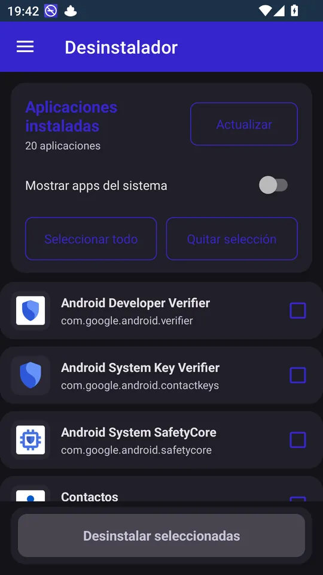
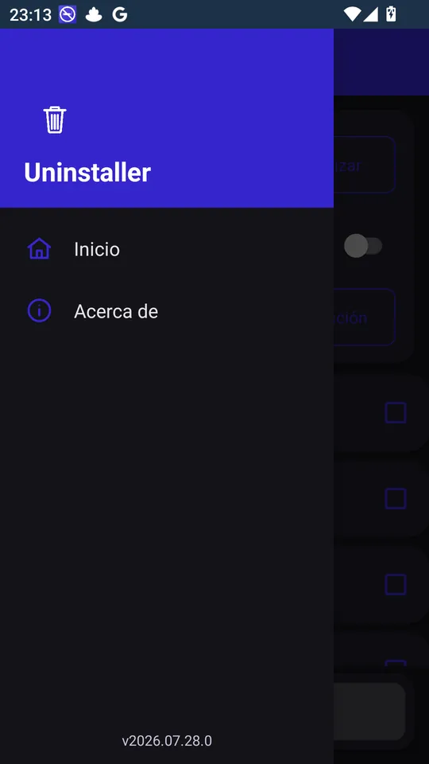
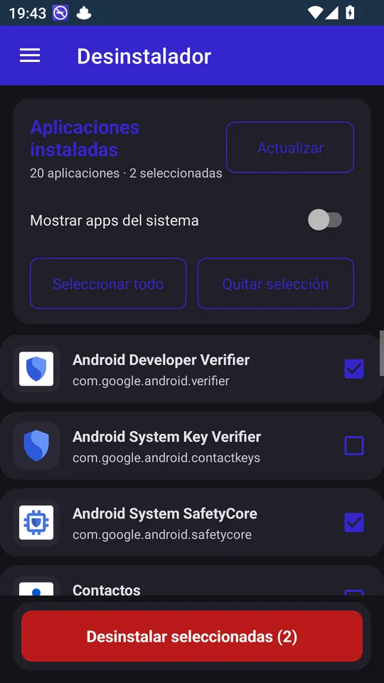
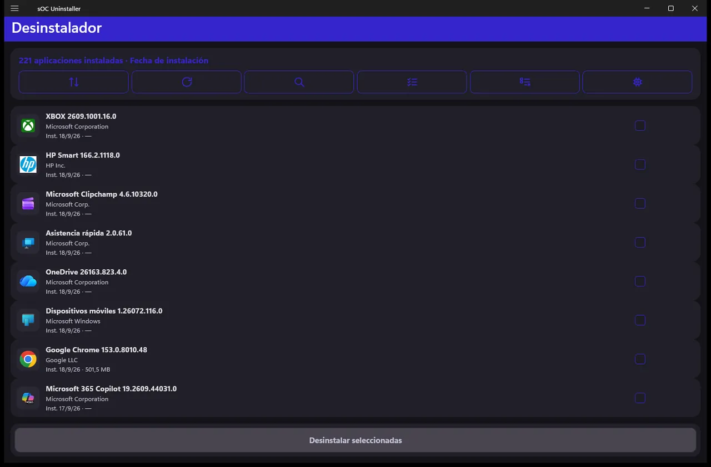
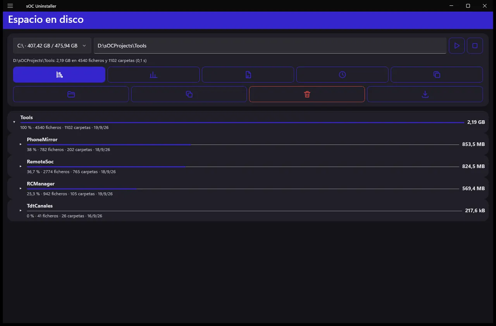

Android · Windows
Marca varias aplicaciones y desinstálalas de una vez, en el móvil y en el PC.
sOC Uninstaller es un desinstalador por lotes. En lugar de ir quitando aplicaciones una por una desde los ajustes, ves todas las que tienes instaladas en una lista, marcas las que sobran y las desinstalas seguidas. Funciona en Android y en Windows con la misma idea y el mismo aspecto.
En Android enseña cada aplicación con su icono, su fecha de instalación, su última actualización y lo que ocupa, y puedes ordenarlas o buscarlas para encontrar rápido lo que ya no usas. Cada desinstalación la confirmas tú en el diálogo del sistema: la aplicación nunca borra nada por su cuenta.
En Windows junta en una sola lista los programas clásicos y las aplicaciones de la Microsoft Store, y puede desinstalarlos sin preguntas donde el instalador lo permite. Además trae una utilidad de Espacio en disco para ver qué carpetas y archivos se comen el disco, encontrar duplicados y mandar a la papelera lo que sobra.
Plataformas
Android / Windows
Descarga
Licencia
MIT, gratuita
Código fuente
Soporte
sOC Uninstaller lee la lista de aplicaciones instaladas solo para enseñártela, y en Windows recorre las carpetas que tú le pidas para medir el espacio; nada de eso sale del dispositivo. No hay cuentas, anuncios ni rastreadores, y la única conexión a internet es para comprobar si hay una versión nueva.
Capturas





La guía explica cómo ponerla en marcha, cada pantalla y cada opción, y las preguntas más habituales.